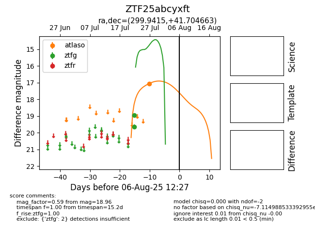

Target ZTF25abcyxft at 2025-08-06 17:07, see:
FINK: fink-portal.org/ZTF25abcyxft
Lasair: lasair-ztf.lsst.ac.uk/objects/ZTF25abcyxft
ALeRCE: alerce.online/object/ZTF25abcyxft
alt names
ZTF25abcyxft (ztf,fink)
coordinates:
equatorial (ra, dec) = (299.9415,+41.70466)
galactic (l, b) = (77.0537,+6.21075)
photometry
last atlaso=17.06, ztfg=18.96
1 atlaso, 2 ztfg detections
